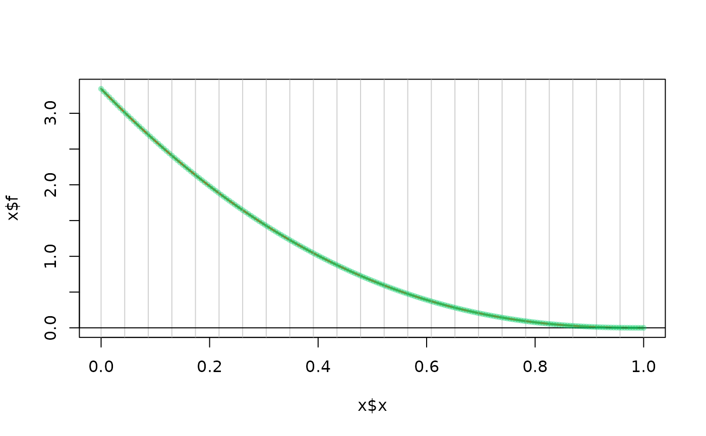

Build a spline density from a provided grid density
SplineDensity.RdBuild a spline density from a provided grid density.
The methods plot, print and predict can be used.
Arguments
- x
-
Numeric vector of values at which the density is provided.
- f
-
Numeric vector of density values corresponding to
x. - xmin
-
Left (or lower) end-point of the distribution.
- xmax
-
Right (or upper) end-point.
- leftDerivEst
-
Integer vector giving the order of the derivatives that will be estimated from the finite differences of the points in
xandf. These values will be used even if derivatives are provided. - rightDerivEst
-
Similar to
leftDerivEst. - leftDeriv
-
Vector of known derivatives at left end-point (if any). The given values are for order \(0\) to \(k-2\) in that order where \(k\) is the order. Unknown values are to be given as
NA. - rightDeriv
-
Similar to
rightDerivfor the upper end-point. - knots
-
A numeric vector of knots in ascending order.
- nKnots
-
Number of knots to be used if
knotsis not provided. - order
-
The spline order \(k\), e.g. \(k = 1\) for a broken line spline and
k = 4for a cubic spline. - plot
-
Logical. If
TRUEa plot is provided. - check
-
Logical. When
TRUE, some check of the computations are carried over and results are printed.
Value
A list object that can be used for density computations. This object
is given an S3 class "SplineDensity". The structure of this
list might evolve in the future life of the package.
Details
A spline approximation for a given density is found by a
constrained regression. First, a suitable basis of B-splines is
built. Then the coefficients are found in order to minimise the
distance to the provided density values with constraints arising
from boundary conditions and from the normalisation condition.
Boundary conditions can be given. By default, the values of the
density and of its first order derivative are taken equal to a
finite difference estimation from x and f. This
works correctly when the grid is fine enough, and when the
provided values correspond to those of a continuous function with
continuous derivative on the closed interval with end-points
xmin and xmax.
Caution
The spline is not warranted to be positive. This will be the case if
positive density values are provided in f and if the grid is
fine enough.
See also
rSplineDensity to generate randomly drawn objects
(e.g. for tests). predict.SplineDensity for the
evaluation at chosen points.
Examples
data(Brest.tide)
SD <- SplineDensity(x = Brest.tide$x, f = Brest.tide$y)
#> leftDeriv = 0 9.381932e-06 NA
#> rightDeriv = 0 -2.479663e-05 NA
SD24 <- SplineDensity(x = Brest.tide$x, f = Brest.tide$y, nKnots = 24)
#> leftDeriv = 0 9.381932e-06 NA
#> rightDeriv = 0 -2.479663e-05 NA
## approximate a bounded GPD (negative shape) by a spline density
shape <- 2 + rexp(1)
x <- seq(from = 0, to = 1, length.out = 200)
f <- (1 - x )^(shape - 1) * shape
SDGP <- SplineDensity(x = x, f = f)
#> leftDeriv = 3.342225 -7.80186 NA
#> rightDeriv = 0 -0.00274446 NA
plot(SDGP)

#> NULL